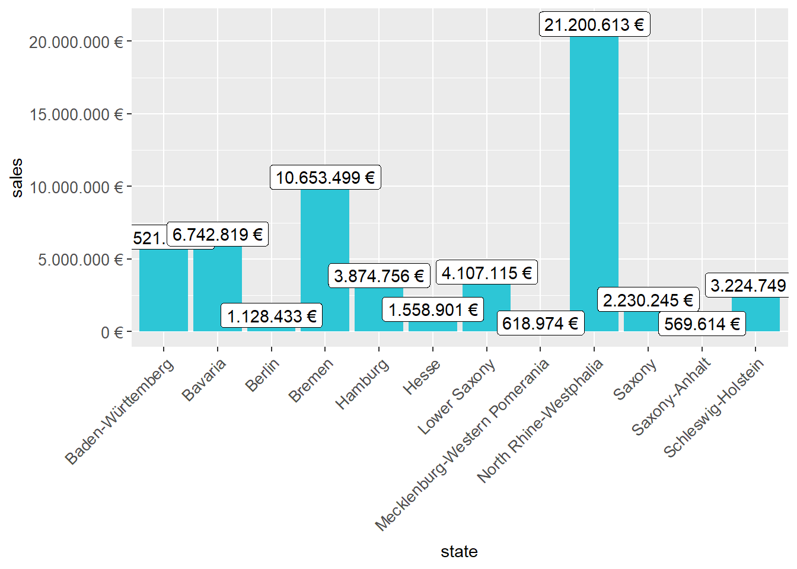

01 Intro to the tidyverse
Joschka Schwarz
2021-04
1 My first post
library(readxl)
library(tidyverse)
library(lubridate)
# by automatically detecting a common column, if any ...
bikes_tbl <- read_excel(path = "C:/Users/sharo/OneDrive/Desktop/MasterSemester2/datasciencebasics/Rtasks_ds_basics-master/ds_basics-Sharon-Nisha/00_data/ds_data/ds_data/01_bike_sales/01_raw_data/bikes.xlsx")
orderlines_tbl <- read_excel("C:/Users/sharo/OneDrive/Desktop/MasterSemester2/datasciencebasics/Rtasks_ds_basics-master/ds_basics-Sharon-Nisha/00_data/ds_data/ds_data/01_bike_sales/01_raw_data/orderlines.xlsx")
bikeshops_tbl <-read_excel("C:/Users/sharo/OneDrive/Desktop/MasterSemester2/datasciencebasics/Rtasks_ds_basics-master/ds_basics-Sharon-Nisha/00_data/ds_data/ds_data/01_bike_sales/01_raw_data/bikeshops.xlsx")
bike_orderlines_joined_tbl <- orderlines_tbl %>%
left_join(bikes_tbl, by = c("product.id" = "bike.id")) %>%
left_join(bikeshops_tbl, by = c("customer.id" = "bikeshop.id"))
copy_bike_orderlines_joined_tbl<-bike_orderlines_joined_tbl
bike_orderlines_wrangled_tbl <- copy_bike_orderlines_joined_tbl %>%
# 5.1 Separate category name
separate(col = location,
into = c("city", "state"),
sep = ",") %>%
# 5.2 Add the total price (price * quantity)
# Add a column to a tibble that uses a formula-style calculation of other columns
mutate(total.price = price * quantity)
sales_by_loc_tbl <-bike_orderlines_wrangled_tbl%>%
#Sales by state
# Select columns
select(state, total.price) %>%
group_by(state) %>%
summarize(sales = sum(total.price)) %>%
mutate(sales_text = scales::dollar(sales, big.mark = ".",
decimal.mark = ",",
prefix = "",
suffix = " €"))
intermediate_table<-bike_orderlines_wrangled_tbl
sales_by_loc_tbl # Step 2 - Visualize
sales_by_loc_tbl %>%
ggplot(aes(x = state, y = sales)) +
# Geometries
geom_col(fill = "#2DC6D6") + # Use geom_col for a bar plot
geom_label(aes(label = sales_text)) + # Adding labels to the bars
geom_smooth(method = "lm", se = FALSE) + # Adding a trendline
scale_y_continuous(labels = scales::dollar_format(big.mark = ".",
decimal.mark = ",",
prefix = "",
suffix = " €"))+
theme(axis.text.x = element_text(size=10,angle = 45, hjust = 1))+#added size of x text and angled
theme(axis.text.y = element_text(size=10, hjust = 1))#added extra line for y text size incrementno need of angle
labs(
title = "Revenue by location",
subtitle = "",
x = "", # Override defaults for x and y
y = "Revenue"
)## $x
## [1] ""
##
## $y
## [1] "Revenue"
##
## $title
## [1] "Revenue by location"
##
## $subtitle
## [1] ""
##
## attr(,"class")
## [1] "labels"newxt exercise
######this part is to be able to plot 2 parameters
library(readxl)
library(tidyverse)
library(lubridate)
sales_by_yea_tbl <-intermediate_table%>%
mutate(total.price = price * quantity) %>%
# 6.1 Sales by Year ----
mutate(year=year(order.date))%>%
# Select columns
select(state,year,total.price)%>%
group_by(state)
######################
hamburg_tbl <-sales_by_yea_tbl%>%
select(year, total.price, state)%>%
group_by(year,state)#####each year each state how much sales has now been grouped
hamburg_tbl##############################
hamburg_tbl%>%
# Set up x, y, fill
ggplot(aes(x = year, y = total.price, fill = state)) +
# Geometries
geom_col() + # Run up to here to get a stacked bar plot
# Facet
facet_wrap(~ state) +
# Formatting
scale_y_continuous(labels = scales::dollar_format(big.mark = ".",
decimal.mark = ",",
prefix = "",
suffix = " €")) +
labs(
title = "Total sale per month based on state",
subtitle = "Each product category has an upward trend",
fill = "Main category" # Changes the legend name
)
Results:North Rhine-Westphalia has the highest sales